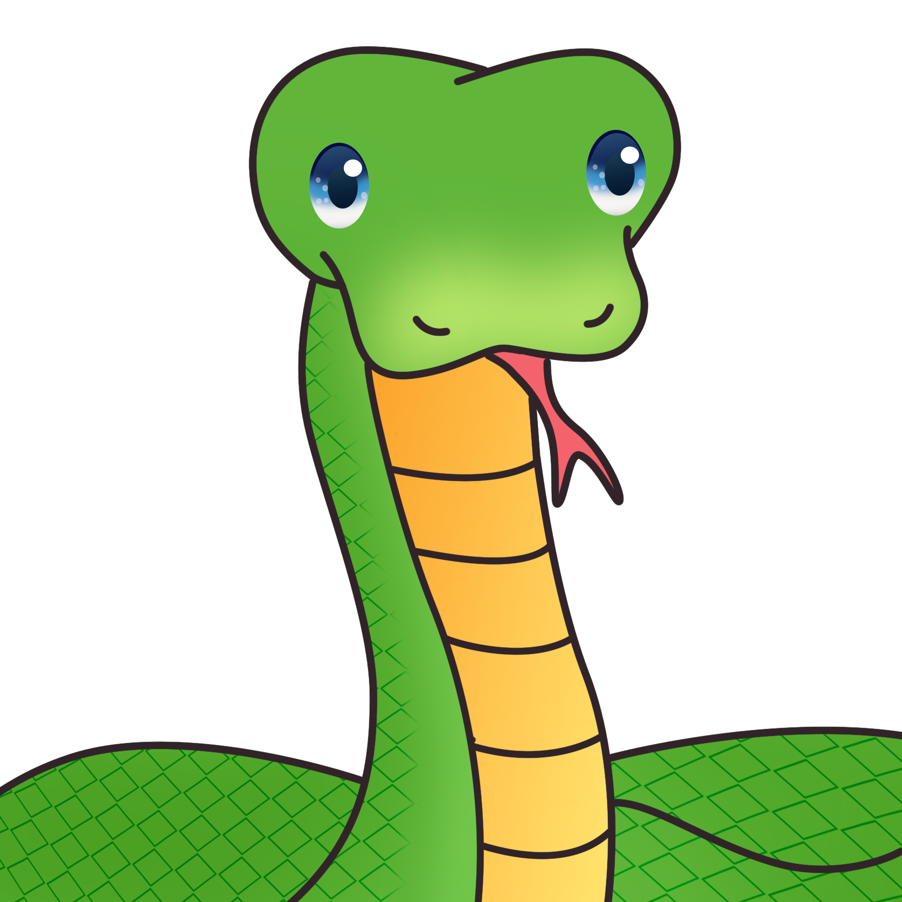
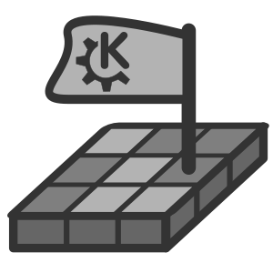

In middle school, getting Chromebooks for class was a game changer for kids who didn't like paying attention at school because suddenly, we had access to the entire internet during class! Of course, the school moderated what sites we could access, but no matter what websites they blocked we always found more games to play!
Personally, I was a big rule follower and would get really nervous when doing something off-task, but by the time I was in 8th grade, I was feeling rebellious and so I played a lot of Minesweeper that year.
Snake

Snake is a game where you play as a snake who starts short and grows longer each time you eat food. The goal is to eat as much food as possible without running into the walls or your tail!
Minesweeper

Minesweeper is a game where you have to find the location of bombs on a grid and marking them with flags. If a tile has a number, it means that is how many bombs that tile is touching. Use these to find the bombs!